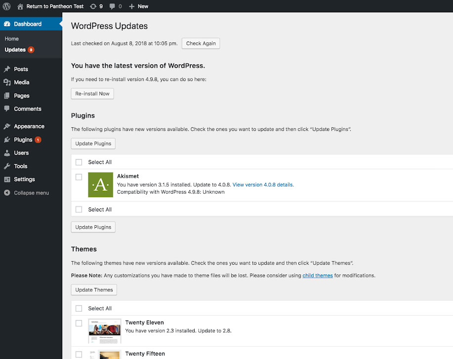
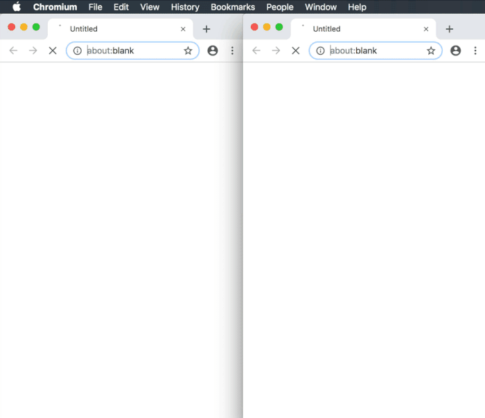
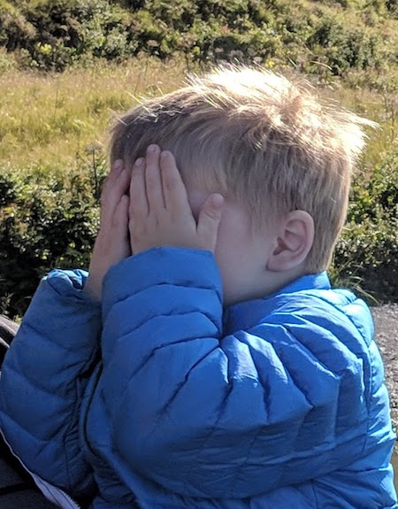

Agenda
| Intro and Setup |
| Visual Regression Testing |
| Using BackstopJS |
| Continuous Integration |
| Standalone Node App |
| Q&A + Extracurricular |
Visual Regression Testing
What is Visual Regression?
re·gres·sion
/rəˈɡreSH(ə)n/
noun
- a return to a former or less developed state.
When have you been plagued by Visual Regression?
- Routine security updates and patches
- Theming and site building
Killer Use Case #1: Routine Updates

Live (before update):

Dev (after update):

Side by side (mobile):

Visual Regression:
The New Pixel Perfect
- The Power of Machine Vision
- Diligent Difference Detection
- Easy to create, quick to run
- Powered by BackstopJS

Visual Regression: Benefits
- "Reference vs Test" Comparison
- Reference (production)
- Test (environment to compare)
- Support for multiple viewports
- Easily scan your entire site
- Helpful error reporting
- Easy to write tests

Limits to Visual Regression
- Lots of noise in the testing process
- High number of false negatives
- Difficulties with dynamic content
- Still saves time

BackstopJS
- Render with headless Chromey or Puppeteer
- Simulate user interactions with simple JS
- Browser reports with visual diffs, CLI reports and JUnit reports
- Plays nice with CI and source control
- Run globally or locally as a standalone packaged app with Node
- Incredibly easy to use: just 3 commands go a long, long way!
github.com/garris/BackstopJS
Everything defined in the backstop.json file
{
"id": "backstop_default",
"viewports": [
{
"label": "phone",
"width": 320,
"height": 480
},
{
"label": "tablet",
"width": 1024,
"height": 768
}
],
"scenarios": [
{
"label": "Homepage",
"url": "https://pantheonweeklydemosite.lndo.site/",
"referenceUrl": "https://www.pantheondemo.com/",
"readyEvent": "",
"readySelector": "",
"delay": 0,
"hideSelectors": [],
"removeSelectors": [],
"hoverSelector": "",
"clickSelector": "",
"postInteractionWait": 0,
"selectors": [],
"selectorExpansion": true,
"expect": 0,
"misMatchThreshold" : 0.1,
"requireSameDimensions": true
}
],
"paths": {
"bitmaps_reference": "backstop_data/bitmaps_reference",
"bitmaps_test": "backstop_data/bitmaps_test",
"engine_scripts": "backstop_data/engine_scripts",
"html_report": "backstop_data/html_report",
"ci_report": "backstop_data/ci_report"
},
"report": ["browser"],
"engine": "puppeteer",
"engineOptions": {
"args": ["--no-sandbox"]
},
"asyncCaptureLimit": 5,
"asyncCompareLimit": 50,
"debug": false,
"debugWindow": false
}
Running BackstopJS globally
- Navigate to your local project
- Initialize Backstop:
backstop init
- Edit your
backstop.json file:
label: name of your scenariourl: local or development URLreferenceUrl: production URL
- Create new reference screenshots:
backstop reference
- Run tests:
backstop test
Killer Use Case #2: Theming & Site Building

Running BackstopJS (notes)
- What happens if we change
viewports or scenarios?
- Regenerate references with
backstop reference
- Rerun the test with
backstop test
- Gotcha: Is your updated site different than production?
Example #1: On Cron
Pantheon Example Terminus Auto Update Script
- Check for updates on cron
- Generate a new environment
- Apply updates and test
- Make backups everywhere
- Apply or notify you
Get the script

Example #2: On Commit
Automated Workflows in Drupal 8 with GitHub, Composer and CircleCI
- Add a module with Composer
- Push the branch & make a PR
- Build the site and run tests
- Notify you on Slack along the way
Get the script
Clone the example repo
We've created an example repo that we're going to clone to give you a jumpstart.
There are detailed instructions in the README to run through this on your own next time.
Today we're going to get started by cloning the repo:
git clone https://github.com/davidneedham/Visual-Regression-Testing-BackstopJS-demo.git

Running the example
- Change into the folder
cd Visual-Regression-Testing-BackstopJS-demo
- Checkout a new branch
git checkout -b my-hacking-1
- Install Node dependencies
npm install
- Run the example script
npm run start
- Wait for the results (it should open in your browser automatically)
Hacking the example
- Edit
includes/backstop.json
- Rerun the script with
npm run start
Running the multiple site example (pt 1)
- Commit your existing changes
git commit -am "All of my changes"
- Checkout the branch
git checkout multiple-sites
- Checkout a new branch to work on
git checkout -b my-hacking-2
- Re-install Node dependies
npm install
- Rerun the example script
npm run start (and type a site name from the list when prompted)
- Wait for the results
Running the multiple site example (pt 2)
- Run the command
npm run start -- --all (note the extra --)
- Wait for the results (from multiple sites!)
- Edit
includes/sitesToUpdate.js (list of sites to test)
- Try changing to one (or more) of your sites
BackstopReferenceBaseUrl is your local / development URLBackstopTestUrl is your production site URLpathsToTest is the array of URIs to test for each site
Running the multiple site example (notes)
npm run start tests a single site- Add
-- --site=my-cool-site to specify a site (no prompt)
npm run start -- --all tests all the sites in includes/sitesToUpdate.js- Backstop config doesn't have to be hard-coded JSON
- See
includes/backstopConfig.js for a dynamic configuration example
Q&A
Let's build something!